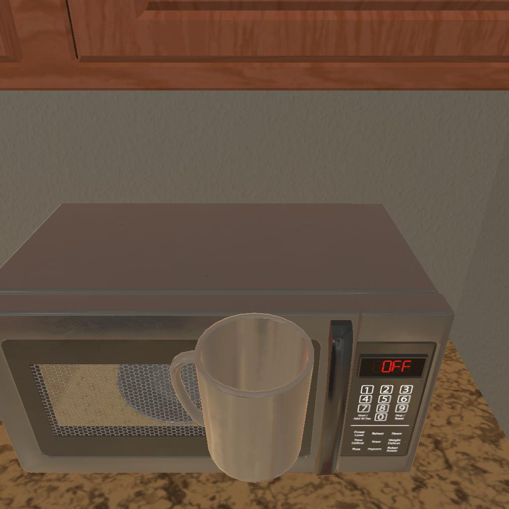

---------------------------------------------------------task: 19---------------------------------------------------------
--------------------------------------------------------------------------------------------------------------------------------------------------------------------
--------------------------------------------------------------------------------------------------------------------------------------------------------------------
Step:--------------------------------------------------------------------------14-------------------------------------------------------------------------------
----------------------------------------
VLM Prompt:
**Task**
Please perform as an embodied AI agent. Our final objective is to put a cool tomato in microwave. Below is the plan for completing the task, the current observation, alongside historical data and admissible actions for the next step. Please determine the best action for the next step!
**Plan**
Below is a detailed step-by-step plan to complete the task.
1. Find a tomato.
2. Pick up the tomato.
3. Find a fridge.
4. Cool the tomato with the fridge.
5. Find a microwave.
6. Place the cooled tomato in the microwave.
**Current Observation**
Displayed is an image capturing the current position of the agent.
**History Information**
Displayed are the previous observations with their corresponding actions.
State 1:
1. Step Index in the Plan: 1
2. Objects: Tomato, Countertop, Sink, Coffee Machine
3. Action: go to countertop 1
State 2:
2. Step Index in the Plan: 2
3. Objects: Countertop
4. Action: go to fridge 1
State 3:
1. Step Index in the Plan: Unspecified (implied continuation from previous steps)
2. Objects: Tomato (already found), Appliance with a handle (potential fridge)
3. Action: open fridge 1
State 4:
2. Step Index in the Plan: Not specified
3. Objects: Tomato, Pan, Bowl, Mug, Fridge
4. Action: close fridge 1
State 5:
1. Step Index in the Plan: After cooling the tomato
2. Objects: Tomato (previously found and cooled), Microwave (not yet visible)
3. Action: go to microwave 1
State 6:
1. Step Index in the Plan: 6
2. Objects: Microwave, Cooled Tomato
3. Action: open microwave 1
State 7:
1. Step Index in the Plan: 6
2. Objects: Microwave, Mug, Potato
3. Action: take mug 2 from microwave 1
State 8:
1. Step Index in the Plan: 8
2. Objects: Microwave (open), Cooled Tomato (in possession), Mug (removed)
3. Action: close microwave 1
State 11:
1. Step Index in the Plan: 8
2. Objects: Microwave
3. Action: close microwave 1
State 12:
1. Step Index in the Plan: 6
2. Objects: Microwave, Mug
3. Action: close microwave 1
**Admissible Actions**
(1): go to cabinet 1
(2): go to cabinet 2
(3): go to cabinet 3
(4): go to fridge 1
(5): go to countertop 1
(6): go to cabinet 4
(7): go to cabinet 5
(8): go to cabinet 6
(9): go to cabinet 7
(10): go to drawer 1
(11): go to drawer 2
(12): go to cabinet 8
(13): go to drawer 3
(14): go to cabinet 9
(15): go to cabinet 10
(16): go to drawer 4
(17): go to cabinet 11
(18): go to toaster 1
(19): go to cabinet 12
(20): go to cabinet 13
(21): go to cabinet 14
(22): go to cabinet 15
(23): go to countertop 2
(24): go to coffeemachine 1
(25): go to garbagecan 1
(26): go to countertop 3
(27): go to countertop 4
(28): go to sink 1
(29): go to stoveburner 1
(30): go to stoveburner 2
(31): go to stoveburner 3
(32): go to sinkbasin 1
(33): open microwave 1
(34): put mug 2 in/on microwave 1
(35): heat mug 2 with microwave 1
(36): examine mug 2
**Analysis Guideline**
1. Analyze the history and current observation, and then determine our current step in the plan and our current place.
2. List all visible objects related to the task in the current observation, without summarizing any as "various items."
3. Analyze the objects in the current observation based on the history and the requirements for the current step, and then determine if we can complete the step with the current observation.
4. Analyze and decide on the most appropriate action to take.
5. Summarize the analysis using the following format: "Analysis: [The summarization of the analysis], The Most Appropriate Action: (i which is the integer.): [Selected action]"
**Notes**
1. We must complete each step of the plan in order and cannot skip steps when the previous ones are not finished.
2. For "Go to" actions listed as "go to xxx [n]", interpret this as there are n distinct actions available: "go to xxx 1", "go to xxx 2", ..., "go to xxx n". Select one specific action from these options instead of using "go to xxx [n]".
3. If receptacles such as drawers, cabinets, and so forth are closed in the current observation, we may try to open them.
4. Pay attention to synonyms and ensure clarity in the terms used.
5. We must determine and provide the single action which must be in the **Admissible Actions**.
6. If there is no history available, we are at the first step and the current place is "Unknown".
**Answer**
Please select the most suitable action by following the **Analysis Guideline**, keeping the above **Notes** in mind.
----------------------------------------
----------------------------------------
VLM Response:
Analysis: According to the history, the agent is currently at step 6 of the plan, which is to place the cooled tomato in the microwave. The current observation shows the microwave with the door open and a mug on the counter. The cooled tomato is not visible in the current observation, but it was previously cooled and is presumably in possession of the agent since the history does not indicate it has been put down. Since the microwave is already open, the next logical step is to place the cooled tomato inside it. However, the admissible actions do not include an option to place the tomato in the microwave, which suggests that the tomato might not be in the agent's possession or there is a discrepancy in the actions provided. The most appropriate action, given the current admissible actions, would be to examine the mug to ensure it is not obstructing the space needed for the tomato, and then hope for a relevant action to appear in the next set of admissible actions.
The Most Appropriate Action: (36): examine mug 2
----------------------------------------
----------------------------------------
>>> Refine VLM Response and Get Pure Action: examine mug 2
----------------------------------------
-----------------------------------------------------------------
Running time: 9.441050291061401 seconds
Total Money: 0
-----------------------------------------------------------------
-----------------------------------------------------------------
Summarization Prompt:
**Context**
Analysis: Since there is no history information, we are at the first step in the plan, which is to find a statue. The current place is unknown. In the current observation, we see a floorlamp next to an armchair with a small table that has a small object on it, which could potentially be the statue we are looking for. Since the plan requires us to find a statue first and it appears there might be one on the table next to the armchair, we should investigate this object to determine if it is the statue we need.
The Most Appropriate Action: (1): go to armchair 1
**Summary**
1. Step Index in the Plan: 1
2. Objects: Floorlamp, Armchair, Small Table, Small Object (potential statue)
3. Action: go to armchair 1
**Context**
Analysis: According to the history, the agent is currently at step 6 of the plan, which is to place the cooled tomato in the microwave. The current observation shows the microwave with the door open and a mug on the counter. The cooled tomato is not visible in the current observation, but it was previously cooled and is presumably in possession of the agent since the history does not indicate it has been put down. Since the microwave is already open, the next logical step is to place the cooled tomato inside it. However, the admissible actions do not include an option to place the tomato in the microwave, which suggests that the tomato might not be in the agent's possession or there is a discrepancy in the actions provided. The most appropriate action, given the current admissible actions, would be to examine the mug to ensure it is not obstructing the space needed for the tomato, and then hope for a relevant action to appear in the next set of admissible actions.
The Most Appropriate Action: (36): examine mug 2
Please summarize the context by following above examples when providing the summary, and ensure that only the summary is included, without any extra explanation.
**Summary**
-----------------------------------------------------------------
-----------------------------------------------------------------
Summarization Response:
1. Step Index in the Plan: 6
2. Objects: Microwave (door open), Mug, Cooled Tomato (not visible)
3. Action: examine mug 2
-----------------------------------------------------------------
-----------------------------------------------------------------
Text Observation:This is a normal mug 2
-----------------------------------------------------------------
UNSUCCEED